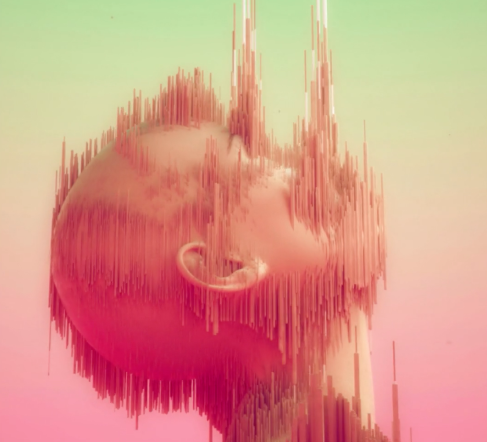
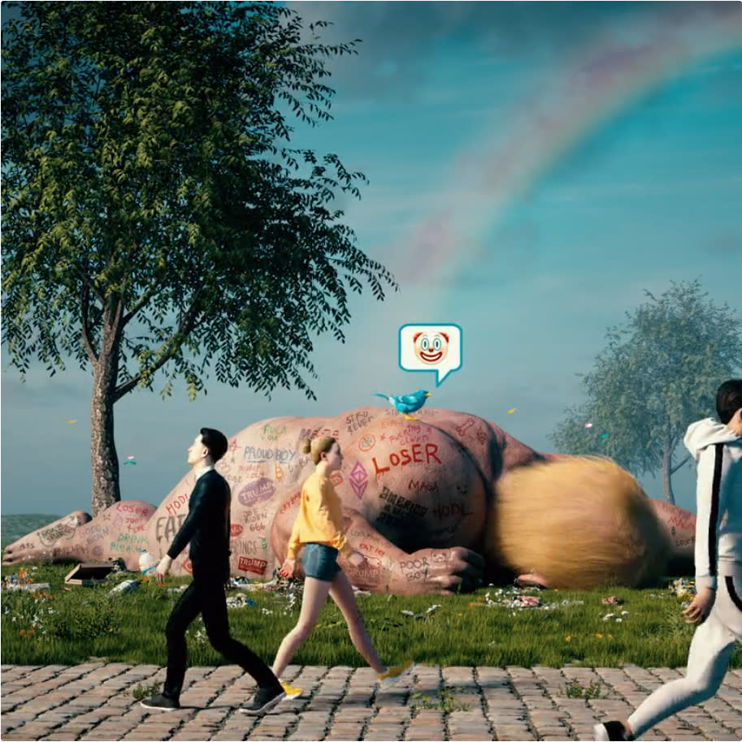
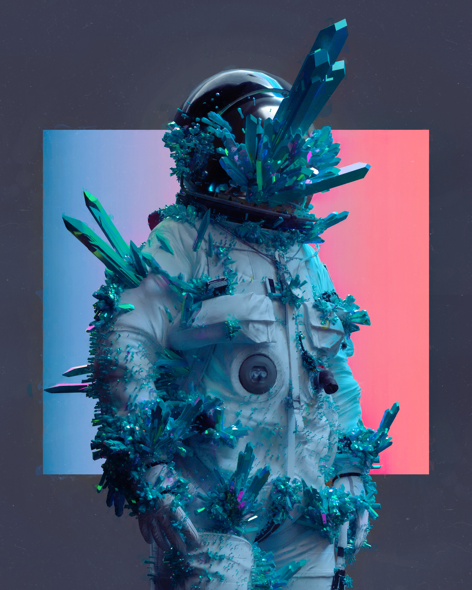
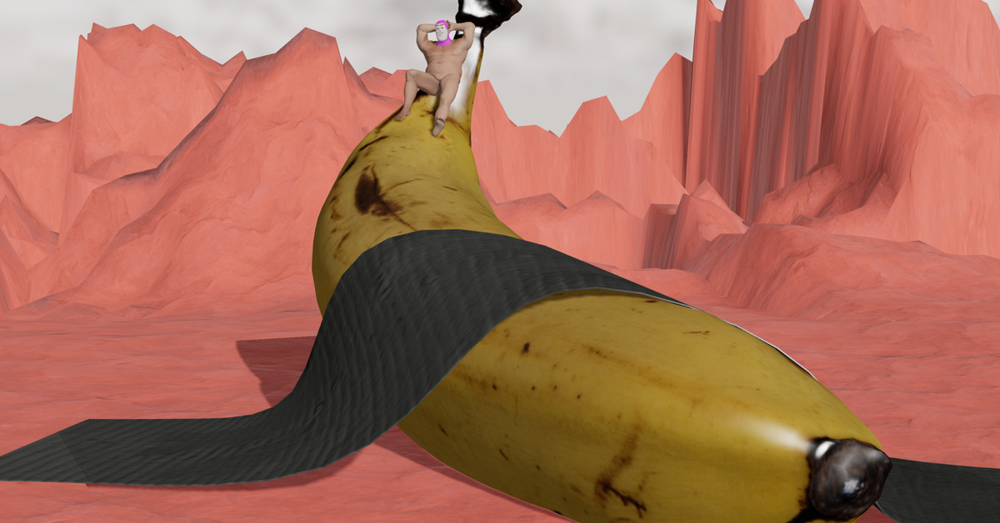
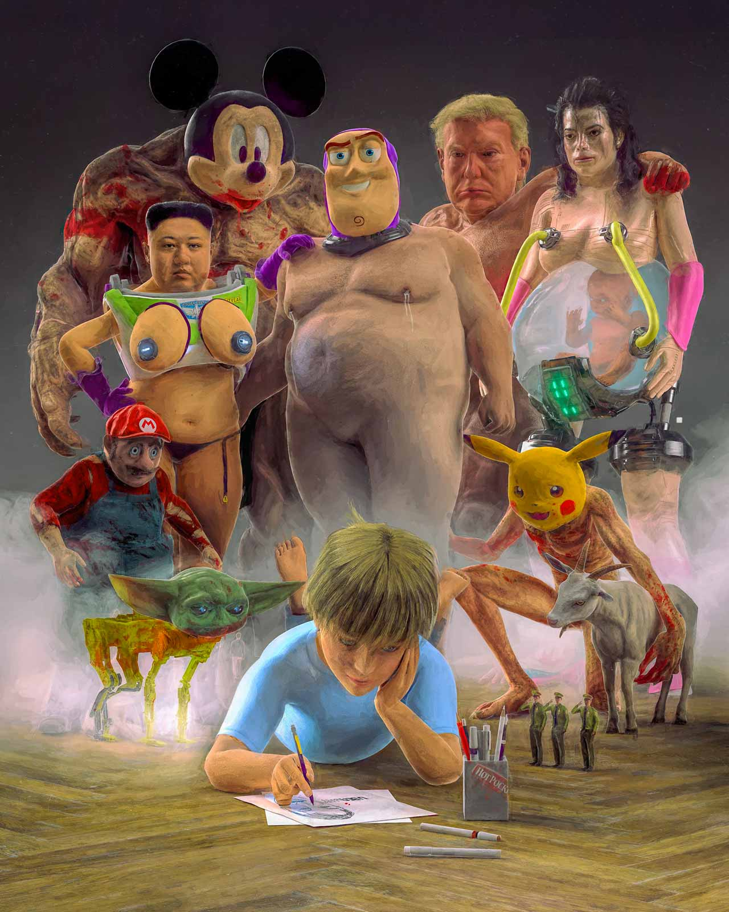
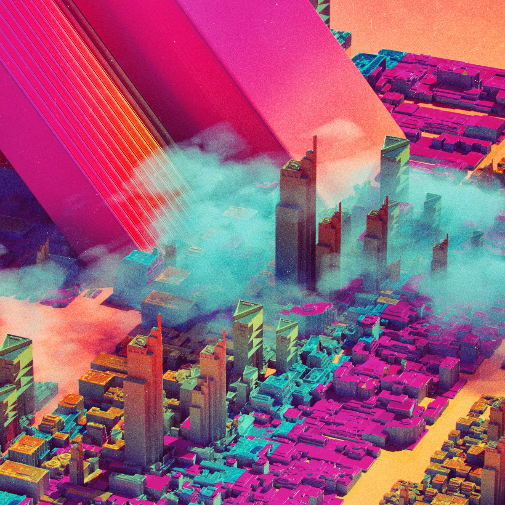

LES ARTS NUMÉRIQUES
COMMENT L'ART S'INSCRIT-IL DANS LE MONDE DU NUMÉRIQUE ?
Depuis des dizaines de milliers d’années, l’art fait partie intégrante de nos vies. Il nous passionne, nous émeut et nous transporte vers des contrées lointaines. La recente émergence des nouvelles technologies a contribué à un changement significatif de notre rapport à l’art.
Avec l’arrivée massive du numérique, le monde de l’art se voit métamorphosé. Pour les artistes comme pour la société, le numérique n'est plus avant-gardiste, c’est une pratique intégrée.
Aujourd’hui, l’art est soumis à une transition vers ce nouvel univers. Les artistes se retrouvent immergés dans ces nouvelles technologies, se les approprient, questionnent leurs dérives potentielles, explorent et créent des univers disruptifs à travers leurs œuvres.
Pour certains, la transition des arts vers le numérique est perçue comme naturelle, innovante et intéressante, néanmoins elle est aussi critiquée et perçue avec un regard sceptique et interrogateur par d’autres.
L’art numérique, qu’est-ce que c’est ?
La première définition est relativement basique : c’est un artiste qui utilise les technologies numériques pour s’exprimer, questionner, chercher ; avec une grammaire, des codes, de nouveaux langages, des enjeux et qui vient définir une culture.
A la différence de la création « classique » et formelle, et des Beaux-Arts tels que la peinture, la sculpture etc, l’œuvre numérique est produite, stockée et présentée uniquement sous format numérique et en exploite le potentiel interactif ou participatif.
Cette forme d’art englobe de multiples genres particuliers comme :
VERS UN CHANGEMENT DE PARADIGME ARTISTIQUE
-
20e siècle
Avènement de l’art video :
Création de l’exposition «Music/ElectronicTelevision» en (Allemagne)
-
1966
Festival new-yorkais 9 Evenings : Theatre and Engineering :
Réunit dix artistes et une trentaine d’ingénieurs issus de Bell Telephone Laboratories : ces œuvres contiennent toutes les composantes de l’art numérique actuel.
-
Années 80
Arrivée de l'art visuel de synthèse (3D...)
Développement de nouvelles pratiques artistiques avec l’arrivée de la micro-informatique grand public : on parle alors d’ « art cybernétique » et d'« art par ordinateur » pour désigner les créations visuelles de type image de synthèse, 3D…
-
1994
1ere exposition virtuelle : “le siècle des lumières dans les musées de France”
Lancée par la direction des musées en France
-
5 avril 2016
Lancement du projet “ The Next Rembrandt”, à Amsterdam
Une intelligence artificielle capable de reproduire la technique du clair-obscur du célèbre peintre Rembrandt : Réalisation du portrait numérique par un ordinateur et des algorithmes, le tout imprimé en 3D.
-
2017
Apparition des NFT
Accélération de la circulation marchande de l’art avec l’apparition des NFT - Une nouvelle forme de transaction, exclusivement numériques et cryptographiques. Ils permettent d’acquérir des titres de propriété inviolables qui peuvent être appliqués à à peu près n’importe quelle oeuvre ou objet numérique.
“ DIGITAL ART IS NOT “REAL ART” ”
[En français : "lart digital n'est pas véritablement de l'art.]
Malgré les récentes innovations artistiques digitales, l’art numérique peine à être reconnu et valorisé comme tel. Le scepticisme autour de l’art digital reste encore profondément enraciné dans l’inconscient collectif : en effet, lorsqu’on entend « art », on pense en tout premier lieu à la Joconde, à Picasso, ou toute sorte d’art existant depuis des millénaires. Très peu de gens penseront immédiatement à l’art numérique.
Cela s’explique par la simple raison que l’art digital est un support nouveau et encore méconnu contrairement aux arts dits “traditionnels” . Même si cela fascine, on ne comprend pas toujours les dessous de leurs démarches, ni les influences culturelles dans lesquelles elles s’inscrivent.

LIBERTÉ DE CRÉER, RENVERSEMENT
DES < CODES > ARTISTIQUES
Pourtant, les nouvelles technologies jouent un rôle artistique majeur et peuvent apporter un changement positif à notre société.
Un enjeu de démocratisation et de conservation du patrimoine :
Qui dit numérisation de l’art, dit facilitation de l’accès aux œuvres.
Grâce à la digitalisation de l’art, il est aujourd’hui possible de visiter des musées de chez soi, sans quitter son canapé.
Désormais, certaines plateformes permettent de digitaliser et internationaliser le marché de l’art, une opportunité en or qui a qui a pris d’autant plus d’importance en cette période de pandémie. La possibilité d'acheter une oeuvre authentique d'un simple clic de souris est un énorme plus pour beaucoup.
CULTIVER L’HYBRIDITÉ :
La fin des frontières strictes entre les disciplines technologiques et artistiques célèbrent la transversalité, l’hybridation des champs de connaissance et les zones de flou. Aujourd’hui, la programmation informatique peut être identifiée comme un outil au potentiel à la fois esthétique et utile au service de l’art.
La digitalisation de l’art offre une expérience sensorielle plus immersive et interactive, notamment grâce aux technologies 3D ou encore à la réalité augmentée , qui viennent, finalement, enrichir l’expérience physique classique. Ainsi, le code devient un outil au service de l’art et élargit le champs des possibles : c’est un tout nouveau monde de l'art numérique qui s'ouvre à nous et qui n'a pas encore été entièrement exploré...
“L’art et la science ont en commun de questionner le monde en rendant visible l’invisible”
- Jean-Philippe Uzan, cosmologiste
DISRUPTIFS . DYSTOPIQUES. DÉCALÉS.
- Feels
.gif)
- 
- 
- 
- 
- 
QUID DE LA PROPRIÉTÉ INTELLECTUELLE ?
L’intelligence artificielle, elle aussi, est source de questionnements. Mais cette fois, sur la notion de propriété. Si les machines deviennent capables de produire des œuvres d’art, à qui appartient-il de signer l’œuvre ? Est-ce seulement à l’artiste ayant pensé au concept ? Aux développeurs l’ayant concrétisé ? Aussi, où commence et s’arrête le processus de création : s’étend-il aux laboratoires de recherche ? Aux lieux d’exposition ?
Autant de questions qui demandent à être explorées, à la fois par les artistes et les institutions culturelles, si ce n’est pas déjà le cas....